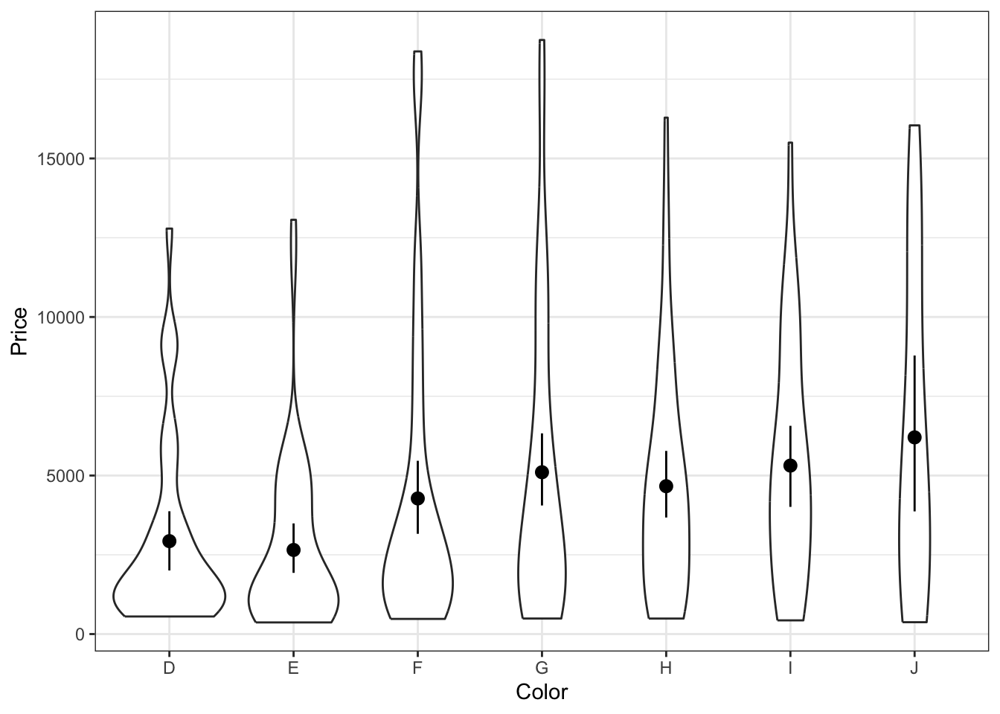
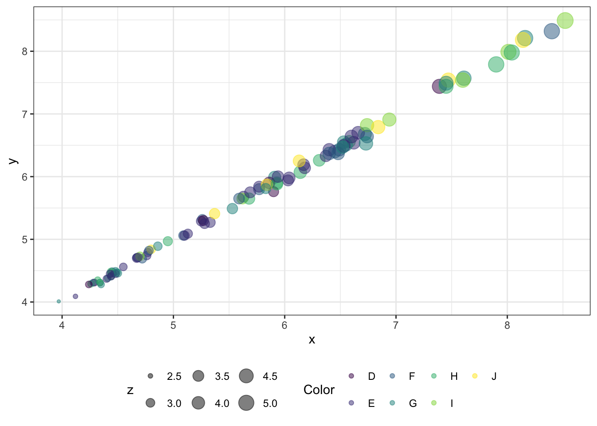

read.csv()2 L2 // Предобработка данных. Дата и время. Визуализация данных
2.1 Форматы файлов данных
2.1.1 CSV
- Текстовый формат
- Значения разделены запятыми (Comma-Separated Values)
- Но это не точно
Прочитать данные этого формата можно функцией
2.1.2 TSV
- Текстовый формат
- Значения разделены знаком табуляции (
\t, Tab-Separated Values)
Прочитать данные этого формата можно функцией
read.table()2.1.3 TXT
- Текстовый формат
- Разделитель может быть любой
Прочитать данные этого формата можно функцией
read.table()2.2 Табличные форматы
- Файлы Excel —
.xls,.xlsx
Для их чтения понадобится пакет readxl, в котором есть функции
readxl::read_xls()
readxl::read_xlsx()2.3 Форматы файлов данных c особой разметкой
Встречаются редко и обычно связаны с данными, которые достаются из интернета (парсинг страниц или выгрзуки JavaScript).
2.3.1 JSON
Выглядят так:
{
"first_name": "John",
"last_name": "Smith",
"is_alive": true,
"age": 27,
"address": {
"street_address": "21 2nd Street",
"city": "New York",
"state": "NY",
"postal_code": "10021-3100"
},
"phone_numbers": [
{
"type": "home",
"number": "212 555-1234"
},
{
"type": "office",
"number": "646 555-4567"
}
],
"children": [
"Catherine",
"Thomas",
"Trevor"
],
"spouse": null
}Для работы с ними пригодится пакет jsonlite.
2.3.2 XML
Выглядят так:
<?xml version="1.0"?>
<catalog>
<book id="bk101">
<author>Gambardella, Matthew</author>
<title>XML Developer's Guide</title>
<genre>Computer</genre>
<price>44.95</price>
<publish_date>2000-10-01</publish_date>
<description>An in-depth look at creating applications
with XML.</description>
</book>
<book id="bk102">
<author>Ralls, Kim</author>
<title>Midnight Rain</title>
<genre>Fantasy</genre>
<price>5.95</price>
<publish_date>2000-12-16</publish_date>
<description>A former architect battles corporate zombies,
an evil sorceress, and her own childhood to become queen
of the world.</description>
</book>
<book id="bk103">
<author>Corets, Eva</author>
<title>Maeve Ascendant</title>
<genre>Fantasy</genre>
<price>5.95</price>
<publish_date>2000-11-17</publish_date>
<description>After the collapse of a nanotechnology
society in England, the young survivors lay the
foundation for a new society.</description>
</book>
</catalog>Для работы с ними пригодится пакет XML.
2.4 Организация рабочего пространства
Рабочая директория — папка, в которую по умолчанию смотрит R, когда начинает искать файлы.
Чтобы узнать рабочую директорию, воспользуйтесь функцией
getwd()Чтобы установить какую-либо папку в качестве рабочей директории, используйте
setwd("/home/nglgrdt/R")2.5 Путь к файлу
Бывает двух видов:
- абсолютный —
/home/nglgrdt/R/wlm2023/pr1-course.R - относительный —
wlm2023/pr1-course.R
Относительный путь вычисляется относительно текущей рабочей директории.
Полезная вещь: .. — подняться на один уровень в иерархии папок.
2.6 Projects
- RStudio предоставляет возможность работать в проектах
- Это существенно упрощает организацию файлов, относящихся к одному исследованию
- Внутри проекта можно создавать необходимые папки (для данных, скриптов, результатов анализа, визуализаций и др.)
- При запуске проекта автоматически устанавливается рабочая директория
- Удобно использовать относительные пути к файлам
- Чтобы код воспроизводился на другом компьютере, достаточно заархивировать весь проект и отправить коллеге
2.6.1 Как создать проект?
- В правом верхнем углу нажмите на
Project: (None)и выберитеNew Project....
- В открывшемся окне выберите
New Directory. Это опция создаст новую папку для проекта.

- Далее выберите
New Project.

- В поле
Directory nameукажите, как будет называться папка проекта. В полеCreate project as subdirectory of:можно выбрать, внутри какой папки будет создана папка проекта. НажмитеCreate Project.
- Проект создан и открыт. Теперь в нем можно работать. Чтобы узнать, в каком проекте вы сейчас находитесь, посмотрите в правый верхний угол.
2.7 Кодировка
Компьютер умеет хранить только числа, а скрипт — это текст
Данные также часто содержат текст
Договорились, что буквенные символы будут храниться на железе компьютера в виде чисел, и составили таблицы соответствий между числами и буквами
Такие таблицы были названы кодировками
Кодировок много, так как они создавались для разных алфавитов и задач
Стандартной считается
UTF-8При работе с нестандартными символами (например, диакритические знаки или фонетические символы) пригодится
UTF-16
2.8 Первичное исследование данных
Прочитаем данные. В данном случае использован относительный путь.
lec2 <- read.csv("data/lecture2.csv", encoding = "UTF-8")Выведем первые 6 строк датасета:
head(lec2) id var1 var2 var3 var4 var5
1 1 Abc 5 TRUE cond1 12.8
2 2 Def 16 FALSE cond1 14.2
3 3 Ghi 94 FALSE cond2 32.5
4 4 Jkl 28 FALSE cond2 9.4
5 5 Mno 11 TRUE cond3 6.3
6 6 Pqr 100 TRUE cond3 11.7Выведем последние 3 строки датасета:
tail(lec2, n = 3) id var1 var2 var3 var4 var5
5 5 Mno 11 TRUE cond3 6.3
6 6 Pqr 100 TRUE cond3 11.7
7 7 Stu 96 FALSE cond1 95.5Посмотрим на структуру датасета:
str(lec2)'data.frame': 7 obs. of 6 variables:
$ id : int 1 2 3 4 5 6 7
$ var1: chr "Abc" "Def" "Ghi" "Jkl" ...
$ var2: int 5 16 94 28 11 100 96
$ var3: logi TRUE FALSE FALSE FALSE TRUE TRUE ...
$ var4: chr "cond1" "cond1" "cond2" "cond2" ...
$ var5: num 12.8 14.2 32.5 9.4 6.3 11.7 95.5Посмотрим описательные статистики по переменным:
summary(lec2) id var1 var2 var3
Min. :1.0 Length:7 Min. : 5.0 Mode :logical
1st Qu.:2.5 Class :character 1st Qu.: 13.5 FALSE:4
Median :4.0 Mode :character Median : 28.0 TRUE :3
Mean :4.0 Mean : 50.0
3rd Qu.:5.5 3rd Qu.: 95.0
Max. :7.0 Max. :100.0
var4 var5
Length:7 Min. : 6.30
Class :character 1st Qu.:10.55
Mode :character Median :12.80
Mean :26.06
3rd Qu.:23.35
Max. :95.50 Сделаем частотную таблицу по категориальной переменной:
table(lec2$var4)
cond1 cond2 cond3
3 2 2 Посмотрим уникальные значений по переменной-индентификатору:
unique(lec2$id)[1] 1 2 3 4 5 6 7Отсортируем количественную переменную по возрастанию:
sort(lec2$var5)[1] 6.3 9.4 11.7 12.8 14.2 32.5 95.5Проверим, есть ли пропущенные значения — выполним функцию is.na() на каждом столце датасета:
apply(lec2, 2, is.na) id var1 var2 var3 var4 var5
[1,] FALSE FALSE FALSE FALSE FALSE FALSE
[2,] FALSE FALSE FALSE FALSE FALSE FALSE
[3,] FALSE FALSE FALSE FALSE FALSE FALSE
[4,] FALSE FALSE FALSE FALSE FALSE FALSE
[5,] FALSE FALSE FALSE FALSE FALSE FALSE
[6,] FALSE FALSE FALSE FALSE FALSE FALSE
[7,] FALSE FALSE FALSE FALSE FALSE FALSEУпрощенным вариантом функции apply() является sapply() — она сразу запускает какую-либо функцию по столбцам датасета. В данном случае использована анонимная функция, которая посчитает количество пропущенных значений в каждом столбце.
sapply(lec2, function(x) sum(is.na(x))) id var1 var2 var3 var4 var5
0 0 0 0 0 0 2.9 Зачем нам предобрабатывать данные?
- Данные разнообразны в зависимости от того
- какая у нас исследовательская область
- какой у нас исследуемый феномен
- с каким оборудованием мы работаем
- …
- Для того, чтобы мы могли работать с любыми данными, независимо от того, откуда они к нам пришли, нам нужно привести их к некому стандартному виду
2.10 Концепция Tidy Data
- В каждом столбце содержится одна переменная
- В каждой строке содержится одно наблюдение
- В каждой ячейке содержится одно значение

2.11 Семейство пакетов tidyverse
Установить пакет:
install.packages("tidyverse")Подключить пакет к текущей сессии R:
library(tidyverse)── Attaching core tidyverse packages ──────────────────────── tidyverse 2.0.0 ──
✔ dplyr 1.1.4 ✔ readr 2.1.5
✔ forcats 1.0.0 ✔ stringr 1.5.1
✔ ggplot2 3.5.1 ✔ tibble 3.2.1
✔ lubridate 1.9.3 ✔ tidyr 1.3.1
✔ purrr 1.0.2
── Conflicts ────────────────────────────────────────── tidyverse_conflicts() ──
✖ dplyr::filter() masks stats::filter()
✖ dplyr::lag() masks stats::lag()
ℹ Use the conflicted package (<http://conflicted.r-lib.org/>) to force all conflicts to become errors2.12 Импорт данных. tibble
Функции импорта данных из tidyverse атоматически читают данные в tibble. С точки зрения пользователя tibble — это тот же самый датафрейм. Есть некоторые отличия в выводе в консоль, с которыми мы ближе познакомимся на практике.
Для чтения CSV-файлов есть следующие функции:
read_csv()
read_csv2()Для чтения данных с другими разделителями есть функция
read_delim()Загрузим данные:
ds <- read_csv("data/lecture2.csv")Rows: 7 Columns: 6
── Column specification ────────────────────────────────────────────────────────
Delimiter: ","
chr (2): var1, var4
dbl (3): id, var2, var5
lgl (1): var3
ℹ Use `spec()` to retrieve the full column specification for this data.
ℹ Specify the column types or set `show_col_types = FALSE` to quiet this message.ds# A tibble: 7 × 6
id var1 var2 var3 var4 var5
<dbl> <chr> <dbl> <lgl> <chr> <dbl>
1 1 Abc 5 TRUE cond1 12.8
2 2 Def 16 FALSE cond1 14.2
3 3 Ghi 94 FALSE cond2 32.5
4 4 Jkl 28 FALSE cond2 9.4
5 5 Mno 11 TRUE cond3 6.3
6 6 Pqr 100 TRUE cond3 11.7
7 7 Stu 96 FALSE cond1 95.52.13 Pipe
Прежде чем начать разговор о предобработке, познакомимся с одним очень полезным оператором из tidyverse — это пайп.
Существует два вида пайпа:
- маггритеровский
%>%- требуется подключение пакета
tidyverse
- требуется подключение пакета
- нативный
|>- находится в базовом R, включается через настройки
Tools > Global Options > Code > Use native pipe operator
- находится в базовом R, включается через настройки
С точки зрения пользователя практически не отличаются друг от друга. И тот, и другой вводится комбинацией Ctrl + Shift + M. Выбрать, какой именно будет использоваться, можно в настройках (Tools > Global Options > Code > Use native pipe operator.)
Пайп передает то, что слева от него, в функцию, которая справа от него, в качестве первого аргумента.
sum(1:3)[1] 61:3 %>% sum()[1] 6round(pi, 2)[1] 3.14pi %>% round(2)[1] 3.14Позволяет выстраивать цепочки последовательных преобразований:
sqrt(abs(log(abs(round(sin(1 / cos(3)), 2)), 3)))[1] 0.38461813 %>% cos() %>%
`/`(1, .) %>%
sin() %>%
round(2) %>%
abs() %>%
log(3) %>%
abs() %>%
sqrt()[1] 0.38461812.14 Переименование переменных
ds# A tibble: 7 × 6
id var1 var2 var3 var4 var5
<dbl> <chr> <dbl> <lgl> <chr> <dbl>
1 1 Abc 5 TRUE cond1 12.8
2 2 Def 16 FALSE cond1 14.2
3 3 Ghi 94 FALSE cond2 32.5
4 4 Jkl 28 FALSE cond2 9.4
5 5 Mno 11 TRUE cond3 6.3
6 6 Pqr 100 TRUE cond3 11.7
7 7 Stu 96 FALSE cond1 95.5ds %>%
rename(city = var1,
age = var2)# A tibble: 7 × 6
id city age var3 var4 var5
<dbl> <chr> <dbl> <lgl> <chr> <dbl>
1 1 Abc 5 TRUE cond1 12.8
2 2 Def 16 FALSE cond1 14.2
3 3 Ghi 94 FALSE cond2 32.5
4 4 Jkl 28 FALSE cond2 9.4
5 5 Mno 11 TRUE cond3 6.3
6 6 Pqr 100 TRUE cond3 11.7
7 7 Stu 96 FALSE cond1 95.5ds %>%
set_names(vars(id, city, age, student, condition, score))# A tibble: 7 × 6
`~id` `~city` `~age` `~student` `~condition` `~score`
<dbl> <chr> <dbl> <lgl> <chr> <dbl>
1 1 Abc 5 TRUE cond1 12.8
2 2 Def 16 FALSE cond1 14.2
3 3 Ghi 94 FALSE cond2 32.5
4 4 Jkl 28 FALSE cond2 9.4
5 5 Mno 11 TRUE cond3 6.3
6 6 Pqr 100 TRUE cond3 11.7
7 7 Stu 96 FALSE cond1 95.5ds %>%
set_names(vars(id, city, age, student, condition, score)) %>%
rename_all(str_remove, "~")# A tibble: 7 × 6
id city age student condition score
<dbl> <chr> <dbl> <lgl> <chr> <dbl>
1 1 Abc 5 TRUE cond1 12.8
2 2 Def 16 FALSE cond1 14.2
3 3 Ghi 94 FALSE cond2 32.5
4 4 Jkl 28 FALSE cond2 9.4
5 5 Mno 11 TRUE cond3 6.3
6 6 Pqr 100 TRUE cond3 11.7
7 7 Stu 96 FALSE cond1 95.52.15 Фильтрация данных. Строки
ds# A tibble: 7 × 6
id var1 var2 var3 var4 var5
<dbl> <chr> <dbl> <lgl> <chr> <dbl>
1 1 Abc 5 TRUE cond1 12.8
2 2 Def 16 FALSE cond1 14.2
3 3 Ghi 94 FALSE cond2 32.5
4 4 Jkl 28 FALSE cond2 9.4
5 5 Mno 11 TRUE cond3 6.3
6 6 Pqr 100 TRUE cond3 11.7
7 7 Stu 96 FALSE cond1 95.5ds %>%
filter(var5 > 10)# A tibble: 5 × 6
id var1 var2 var3 var4 var5
<dbl> <chr> <dbl> <lgl> <chr> <dbl>
1 1 Abc 5 TRUE cond1 12.8
2 2 Def 16 FALSE cond1 14.2
3 3 Ghi 94 FALSE cond2 32.5
4 6 Pqr 100 TRUE cond3 11.7
5 7 Stu 96 FALSE cond1 95.5ds %>%
filter(var3)# A tibble: 3 × 6
id var1 var2 var3 var4 var5
<dbl> <chr> <dbl> <lgl> <chr> <dbl>
1 1 Abc 5 TRUE cond1 12.8
2 5 Mno 11 TRUE cond3 6.3
3 6 Pqr 100 TRUE cond3 11.7ds %>% slice(3:5)# A tibble: 3 × 6
id var1 var2 var3 var4 var5
<dbl> <chr> <dbl> <lgl> <chr> <dbl>
1 3 Ghi 94 FALSE cond2 32.5
2 4 Jkl 28 FALSE cond2 9.4
3 5 Mno 11 TRUE cond3 6.32.16 Фильтрация данных. Столбцы
ds# A tibble: 7 × 6
id var1 var2 var3 var4 var5
<dbl> <chr> <dbl> <lgl> <chr> <dbl>
1 1 Abc 5 TRUE cond1 12.8
2 2 Def 16 FALSE cond1 14.2
3 3 Ghi 94 FALSE cond2 32.5
4 4 Jkl 28 FALSE cond2 9.4
5 5 Mno 11 TRUE cond3 6.3
6 6 Pqr 100 TRUE cond3 11.7
7 7 Stu 96 FALSE cond1 95.5ds %>%
select(id, var1, var3, var4)# A tibble: 7 × 4
id var1 var3 var4
<dbl> <chr> <lgl> <chr>
1 1 Abc TRUE cond1
2 2 Def FALSE cond1
3 3 Ghi FALSE cond2
4 4 Jkl FALSE cond2
5 5 Mno TRUE cond3
6 6 Pqr TRUE cond3
7 7 Stu FALSE cond1ds %>%
select(starts_with("var"))# A tibble: 7 × 5
var1 var2 var3 var4 var5
<chr> <dbl> <lgl> <chr> <dbl>
1 Abc 5 TRUE cond1 12.8
2 Def 16 FALSE cond1 14.2
3 Ghi 94 FALSE cond2 32.5
4 Jkl 28 FALSE cond2 9.4
5 Mno 11 TRUE cond3 6.3
6 Pqr 100 TRUE cond3 11.7
7 Stu 96 FALSE cond1 95.52.17 Сортировка данных
ds# A tibble: 7 × 6
id var1 var2 var3 var4 var5
<dbl> <chr> <dbl> <lgl> <chr> <dbl>
1 1 Abc 5 TRUE cond1 12.8
2 2 Def 16 FALSE cond1 14.2
3 3 Ghi 94 FALSE cond2 32.5
4 4 Jkl 28 FALSE cond2 9.4
5 5 Mno 11 TRUE cond3 6.3
6 6 Pqr 100 TRUE cond3 11.7
7 7 Stu 96 FALSE cond1 95.5ds %>%
arrange(var5)# A tibble: 7 × 6
id var1 var2 var3 var4 var5
<dbl> <chr> <dbl> <lgl> <chr> <dbl>
1 5 Mno 11 TRUE cond3 6.3
2 4 Jkl 28 FALSE cond2 9.4
3 6 Pqr 100 TRUE cond3 11.7
4 1 Abc 5 TRUE cond1 12.8
5 2 Def 16 FALSE cond1 14.2
6 3 Ghi 94 FALSE cond2 32.5
7 7 Stu 96 FALSE cond1 95.5ds %>%
arrange(desc(var5))# A tibble: 7 × 6
id var1 var2 var3 var4 var5
<dbl> <chr> <dbl> <lgl> <chr> <dbl>
1 7 Stu 96 FALSE cond1 95.5
2 3 Ghi 94 FALSE cond2 32.5
3 2 Def 16 FALSE cond1 14.2
4 1 Abc 5 TRUE cond1 12.8
5 6 Pqr 100 TRUE cond3 11.7
6 4 Jkl 28 FALSE cond2 9.4
7 5 Mno 11 TRUE cond3 6.3ds %>%
distinct(var4, var3)# A tibble: 4 × 2
var4 var3
<chr> <lgl>
1 cond1 TRUE
2 cond1 FALSE
3 cond2 FALSE
4 cond3 TRUE 2.18 Создание и изменение переменных
ds# A tibble: 7 × 6
id var1 var2 var3 var4 var5
<dbl> <chr> <dbl> <lgl> <chr> <dbl>
1 1 Abc 5 TRUE cond1 12.8
2 2 Def 16 FALSE cond1 14.2
3 3 Ghi 94 FALSE cond2 32.5
4 4 Jkl 28 FALSE cond2 9.4
5 5 Mno 11 TRUE cond3 6.3
6 6 Pqr 100 TRUE cond3 11.7
7 7 Stu 96 FALSE cond1 95.5ds %>%
mutate(banch = 1)# A tibble: 7 × 7
id var1 var2 var3 var4 var5 banch
<dbl> <chr> <dbl> <lgl> <chr> <dbl> <dbl>
1 1 Abc 5 TRUE cond1 12.8 1
2 2 Def 16 FALSE cond1 14.2 1
3 3 Ghi 94 FALSE cond2 32.5 1
4 4 Jkl 28 FALSE cond2 9.4 1
5 5 Mno 11 TRUE cond3 6.3 1
6 6 Pqr 100 TRUE cond3 11.7 1
7 7 Stu 96 FALSE cond1 95.5 1ds %>%
mutate(banch = 1,
var5_cat = ifelse(var5 > mean(var5), "high", "low"),
var4 = recode(var4,
"cond1" = "easy",
"cond2" = "medium",
"cond3" = "hard"))# A tibble: 7 × 8
id var1 var2 var3 var4 var5 banch var5_cat
<dbl> <chr> <dbl> <lgl> <chr> <dbl> <dbl> <chr>
1 1 Abc 5 TRUE easy 12.8 1 low
2 2 Def 16 FALSE easy 14.2 1 low
3 3 Ghi 94 FALSE medium 32.5 1 high
4 4 Jkl 28 FALSE medium 9.4 1 low
5 5 Mno 11 TRUE hard 6.3 1 low
6 6 Pqr 100 TRUE hard 11.7 1 low
7 7 Stu 96 FALSE easy 95.5 1 high 2.19 Группировка и агрегация данных
ds# A tibble: 7 × 6
id var1 var2 var3 var4 var5
<dbl> <chr> <dbl> <lgl> <chr> <dbl>
1 1 Abc 5 TRUE cond1 12.8
2 2 Def 16 FALSE cond1 14.2
3 3 Ghi 94 FALSE cond2 32.5
4 4 Jkl 28 FALSE cond2 9.4
5 5 Mno 11 TRUE cond3 6.3
6 6 Pqr 100 TRUE cond3 11.7
7 7 Stu 96 FALSE cond1 95.5ds %>%
summarise(v5_mean = mean(var5),
v2_median = median(var2))# A tibble: 1 × 2
v5_mean v2_median
<dbl> <dbl>
1 26.1 28ds %>%
group_by(var4) %>%
summarise(n = n(),
v5_mean = mean(var5),
v2_median = median(var2))# A tibble: 3 × 4
var4 n v5_mean v2_median
<chr> <int> <dbl> <dbl>
1 cond1 3 40.8 16
2 cond2 2 21.0 61
3 cond3 2 9 55.5ds %>%
summarise(n = n(),
v5_mean = mean(var5),
v2_median = median(var2),
.by = var4)# A tibble: 3 × 4
var4 n v5_mean v2_median
<chr> <int> <dbl> <dbl>
1 cond1 3 40.8 16
2 cond2 2 21.0 61
3 cond3 2 9 55.5ungroup()2.20 Объединение датасетов. Строки и столбцы
a# A tibble: 4 × 3
id var1 var2
<dbl> <chr> <dbl>
1 1 Abc 5
2 2 Def 16
3 3 Ghi 94
4 4 Jkl 28b# A tibble: 4 × 3
id var3 var4
<dbl> <lgl> <chr>
1 1 TRUE cond1
2 2 FALSE cond1
3 3 FALSE cond2
4 4 FALSE cond2c# A tibble: 3 × 3
id var1 var2
<dbl> <chr> <dbl>
1 5 Mno 11
2 6 Pqr 100
3 7 Stu 96a %>%
bind_cols(b)New names:
• `id` -> `id...1`
• `id` -> `id...4`# A tibble: 4 × 6
id...1 var1 var2 id...4 var3 var4
<dbl> <chr> <dbl> <dbl> <lgl> <chr>
1 1 Abc 5 1 TRUE cond1
2 2 Def 16 2 FALSE cond1
3 3 Ghi 94 3 FALSE cond2
4 4 Jkl 28 4 FALSE cond2a %>%
bind_rows(c)# A tibble: 7 × 3
id var1 var2
<dbl> <chr> <dbl>
1 1 Abc 5
2 2 Def 16
3 3 Ghi 94
4 4 Jkl 28
5 5 Mno 11
6 6 Pqr 100
7 7 Stu 962.21 Объединение датасетов. Ключ
x# A tibble: 4 × 3
id var1 var2
<dbl> <chr> <dbl>
1 1 Abc 5
2 2 Def 16
3 5 Mno 11
4 7 Stu 96y# A tibble: 4 × 3
id var3 var4
<dbl> <chr> <dbl>
1 1 cond1 12.8
2 2 cond1 14.2
3 3 cond2 32.5
4 4 cond2 9.42.22 inner_join()
x# A tibble: 4 × 3
id var1 var2
<dbl> <chr> <dbl>
1 1 Abc 5
2 2 Def 16
3 5 Mno 11
4 7 Stu 96y# A tibble: 4 × 3
id var3 var4
<dbl> <chr> <dbl>
1 1 cond1 12.8
2 2 cond1 14.2
3 3 cond2 32.5
4 4 cond2 9.4x %>% inner_join(y)Joining with `by = join_by(id)`# A tibble: 2 × 5
id var1 var2 var3 var4
<dbl> <chr> <dbl> <chr> <dbl>
1 1 Abc 5 cond1 12.8
2 2 Def 16 cond1 14.22.23 left_join()

x# A tibble: 4 × 3
id var1 var2
<dbl> <chr> <dbl>
1 1 Abc 5
2 2 Def 16
3 5 Mno 11
4 7 Stu 96y# A tibble: 4 × 3
id var3 var4
<dbl> <chr> <dbl>
1 1 cond1 12.8
2 2 cond1 14.2
3 3 cond2 32.5
4 4 cond2 9.4x %>% left_join(y)Joining with `by = join_by(id)`# A tibble: 4 × 5
id var1 var2 var3 var4
<dbl> <chr> <dbl> <chr> <dbl>
1 1 Abc 5 cond1 12.8
2 2 Def 16 cond1 14.2
3 5 Mno 11 <NA> NA
4 7 Stu 96 <NA> NA 2.24 right_join()
x# A tibble: 4 × 3
id var1 var2
<dbl> <chr> <dbl>
1 1 Abc 5
2 2 Def 16
3 5 Mno 11
4 7 Stu 96y# A tibble: 4 × 3
id var3 var4
<dbl> <chr> <dbl>
1 1 cond1 12.8
2 2 cond1 14.2
3 3 cond2 32.5
4 4 cond2 9.4x %>% right_join(y)Joining with `by = join_by(id)`# A tibble: 4 × 5
id var1 var2 var3 var4
<dbl> <chr> <dbl> <chr> <dbl>
1 1 Abc 5 cond1 12.8
2 2 Def 16 cond1 14.2
3 3 <NA> NA cond2 32.5
4 4 <NA> NA cond2 9.42.25 full_join()
x# A tibble: 4 × 3
id var1 var2
<dbl> <chr> <dbl>
1 1 Abc 5
2 2 Def 16
3 5 Mno 11
4 7 Stu 96y# A tibble: 4 × 3
id var3 var4
<dbl> <chr> <dbl>
1 1 cond1 12.8
2 2 cond1 14.2
3 3 cond2 32.5
4 4 cond2 9.4x %>% full_join(y)Joining with `by = join_by(id)`# A tibble: 6 × 5
id var1 var2 var3 var4
<dbl> <chr> <dbl> <chr> <dbl>
1 1 Abc 5 cond1 12.8
2 2 Def 16 cond1 14.2
3 5 Mno 11 <NA> NA
4 7 Stu 96 <NA> NA
5 3 <NA> NA cond2 32.5
6 4 <NA> NA cond2 9.42.26 semi_join()
x# A tibble: 4 × 3
id var1 var2
<dbl> <chr> <dbl>
1 1 Abc 5
2 2 Def 16
3 5 Mno 11
4 7 Stu 96y# A tibble: 4 × 3
id var3 var4
<dbl> <chr> <dbl>
1 1 cond1 12.8
2 2 cond1 14.2
3 3 cond2 32.5
4 4 cond2 9.4x %>% semi_join(y)Joining with `by = join_by(id)`# A tibble: 2 × 3
id var1 var2
<dbl> <chr> <dbl>
1 1 Abc 5
2 2 Def 16y %>% semi_join(x)Joining with `by = join_by(id)`# A tibble: 2 × 3
id var3 var4
<dbl> <chr> <dbl>
1 1 cond1 12.8
2 2 cond1 14.22.27 anti_join()

x# A tibble: 4 × 3
id var1 var2
<dbl> <chr> <dbl>
1 1 Abc 5
2 2 Def 16
3 5 Mno 11
4 7 Stu 96y# A tibble: 4 × 3
id var3 var4
<dbl> <chr> <dbl>
1 1 cond1 12.8
2 2 cond1 14.2
3 3 cond2 32.5
4 4 cond2 9.4x %>% anti_join(y)Joining with `by = join_by(id)`# A tibble: 2 × 3
id var1 var2
<dbl> <chr> <dbl>
1 5 Mno 11
2 7 Stu 96y %>% anti_join(x)Joining with `by = join_by(id)`# A tibble: 2 × 3
id var3 var4
<dbl> <chr> <dbl>
1 3 cond2 32.5
2 4 cond2 9.42.28 Дублирование ключа
x# A tibble: 5 × 3
id var1 var2
<dbl> <chr> <dbl>
1 1 Abc 5
2 1 Abc 7
3 2 Def 16
4 5 Mno 11
5 7 Stu 96y# A tibble: 5 × 3
id var3 var4
<dbl> <chr> <dbl>
1 1 cond1 12.8
2 2 cond1 14.2
3 2 cond2 2
4 3 cond2 32.5
5 4 cond2 9.4x %>% inner_join(y)Joining with `by = join_by(id)`Warning in inner_join(., y): Detected an unexpected many-to-many relationship between `x` and `y`.
ℹ Row 3 of `x` matches multiple rows in `y`.
ℹ Row 1 of `y` matches multiple rows in `x`.
ℹ If a many-to-many relationship is expected, set `relationship =
"many-to-many"` to silence this warning.# A tibble: 4 × 5
id var1 var2 var3 var4
<dbl> <chr> <dbl> <chr> <dbl>
1 1 Abc 5 cond1 12.8
2 1 Abc 7 cond1 12.8
3 2 Def 16 cond1 14.2
4 2 Def 16 cond2 2 x %>% left_join(y)Joining with `by = join_by(id)`Warning in left_join(., y): Detected an unexpected many-to-many relationship between `x` and `y`.
ℹ Row 3 of `x` matches multiple rows in `y`.
ℹ Row 1 of `y` matches multiple rows in `x`.
ℹ If a many-to-many relationship is expected, set `relationship =
"many-to-many"` to silence this warning.# A tibble: 6 × 5
id var1 var2 var3 var4
<dbl> <chr> <dbl> <chr> <dbl>
1 1 Abc 5 cond1 12.8
2 1 Abc 7 cond1 12.8
3 2 Def 16 cond1 14.2
4 2 Def 16 cond2 2
5 5 Mno 11 <NA> NA
6 7 Stu 96 <NA> NA x %>% right_join(y)Joining with `by = join_by(id)`Warning in right_join(., y): Detected an unexpected many-to-many relationship between `x` and `y`.
ℹ Row 3 of `x` matches multiple rows in `y`.
ℹ Row 1 of `y` matches multiple rows in `x`.
ℹ If a many-to-many relationship is expected, set `relationship =
"many-to-many"` to silence this warning.# A tibble: 6 × 5
id var1 var2 var3 var4
<dbl> <chr> <dbl> <chr> <dbl>
1 1 Abc 5 cond1 12.8
2 1 Abc 7 cond1 12.8
3 2 Def 16 cond1 14.2
4 2 Def 16 cond2 2
5 3 <NA> NA cond2 32.5
6 4 <NA> NA cond2 9.4x %>% full_join(y)Joining with `by = join_by(id)`Warning in full_join(., y): Detected an unexpected many-to-many relationship between `x` and `y`.
ℹ Row 3 of `x` matches multiple rows in `y`.
ℹ Row 1 of `y` matches multiple rows in `x`.
ℹ If a many-to-many relationship is expected, set `relationship =
"many-to-many"` to silence this warning.# A tibble: 8 × 5
id var1 var2 var3 var4
<dbl> <chr> <dbl> <chr> <dbl>
1 1 Abc 5 cond1 12.8
2 1 Abc 7 cond1 12.8
3 2 Def 16 cond1 14.2
4 2 Def 16 cond2 2
5 5 Mno 11 <NA> NA
6 7 Stu 96 <NA> NA
7 3 <NA> NA cond2 32.5
8 4 <NA> NA cond2 9.42.29 Способы объединения по ключу на диаграммах Венна
2.30 Широкий и длинный форматы данных
long# A tibble: 6 × 3
id var1 var2
<int> <chr> <dbl>
1 1 cond1 12.8
2 2 cond1 14.2
3 1 cond2 32.5
4 2 cond2 9.4
5 1 cond3 6.3
6 2 cond3 11.7long %>%
pivot_wider(names_from = var1,
values_from = var2) -> wide
wide# A tibble: 2 × 4
id cond1 cond2 cond3
<int> <dbl> <dbl> <dbl>
1 1 12.8 32.5 6.3
2 2 14.2 9.4 11.7wide %>%
pivot_longer(cols = -id) # names_to, values_to# A tibble: 6 × 3
id name value
<int> <chr> <dbl>
1 1 cond1 12.8
2 1 cond2 32.5
3 1 cond3 6.3
4 2 cond1 14.2
5 2 cond2 9.4
6 2 cond3 11.72.31 Строки
Два специализированных пакета:
stringr(является частьюtidyverse)stringi(устанавливается отдельно)
# install.packages("stringi")
library(stringi)2.31.1 Как создать строку?
s1 <- "сложившаяся структура организации влечет за собой процесс внедрения и модернизации новых предложений"
s1[1] "сложившаяся структура организации влечет за собой процесс внедрения и модернизации новых предложений"s2 <- 'С другой стороны постоянный количественный "рост" и сфера нашей активности позволяет выполнять важные задания по разработке соответствующий условий активизации'
s2[1] "С другой стороны постоянный количественный \"рост\" и сфера нашей активности позволяет выполнять важные задания по разработке соответствующий условий активизации"s3 <- "С другой стороны постоянный количественный "рост" и сфера нашей активности позволяет выполнять важные задания по разработке соответствующий условий активизации"
s3Error in parse(text = input): <text>:1:52: unexpected symbol
1: s3 <- "С другой стороны постоянный количественный "рост
^s4 <- "С другой стороны постоянный количественный 'рост' и сфера нашей активности позволяет выполнять важные задания по разработке соответствующий условий активизации"
s4[1] "С другой стороны постоянный количественный 'рост' и сфера нашей активности позволяет выполнять важные задания по разработке соответствующий условий активизации"s5 <- "С другой стороны постоянный количественный «рост» и сфера нашей активности позволяет выполнять важные задания по разработке соответствующий условий активизации"
s5[1] "С другой стороны постоянный количественный «рост» и сфера нашей активности позволяет выполнять важные задания по разработке соответствующий условий активизации"2.32 Генерация случайных строк
stri_rand_strings(n = 10, length = 5) [1] "eZ1eh" "eyznU" "YTRXy" "Uz5d0" "aTh8T" "B5DRC" "2yzFP" "FDTuK" "tW43M"
[10] "RMT92"2.33 Операции над строками
2.33.1 Конкатенация строк
paste('first', 'second', 'third')[1] "first second third"paste('first', 'second', 'third', sep = "_")[1] "first_second_third"paste0('first', 'second', 'third')[1] "firstsecondthird"str_c('first', 'second', 'third')[1] "firstsecondthird"str_c('first', 'second', 'third', sep = "|")[1] "first|second|third"stri_c('first', 'second', 'third')[1] "firstsecondthird"stri_c('first', 'second', 'third', sep = " & ")[1] "first & second & third"ds_1# A tibble: 150 × 4
id scale item score
<int> <chr> <int> <int>
1 1 A 1 4
2 1 A 2 1
3 1 A 3 5
4 1 A 4 1
5 1 A 5 5
6 1 B 1 1
7 1 B 2 2
8 1 B 3 5
9 1 B 4 3
10 1 B 5 5
# ℹ 140 more rowsds_1 %>%
unite(scale_item, scale, item, sep = "_") -> ds_2
ds_2# A tibble: 150 × 3
id scale_item score
<int> <chr> <int>
1 1 A_1 4
2 1 A_2 1
3 1 A_3 5
4 1 A_4 1
5 1 A_5 5
6 1 B_1 1
7 1 B_2 2
8 1 B_3 5
9 1 B_4 3
10 1 B_5 5
# ℹ 140 more rows2.33.2 Разделение строк
str_split("first second third", pattern = " ")[[1]]
[1] "first" "second" "third" ds_2 %>%
separate(scale_item, into = c("scale", "item"))# A tibble: 150 × 4
id scale item score
<int> <chr> <chr> <int>
1 1 A 1 4
2 1 A 2 1
3 1 A 3 5
4 1 A 4 1
5 1 A 5 5
6 1 B 1 1
7 1 B 2 2
8 1 B 3 5
9 1 B 4 3
10 1 B 5 5
# ℹ 140 more rows2.33.3 Сортировка строк
unsorted_s [1] "Odl" "Snm" "Nqr" "Cka" "Jgf" "Ruu" "Vlo" "Koi" "Ejt" "Tmp" "Nvd" "Vin"
[13] "Ysv" "Zrk" "Eph" "Swx" "Yey" "Ytg" "Ixs" "Ccw" "Hfj" "Zab" "Gbz" "Jhe"
[25] "Iyc" "Szq"sort(unsorted_s) [1] "Ccw" "Cka" "Ejt" "Eph" "Gbz" "Hfj" "Ixs" "Iyc" "Jgf" "Jhe" "Koi" "Nqr"
[13] "Nvd" "Odl" "Ruu" "Snm" "Swx" "Szq" "Tmp" "Vin" "Vlo" "Yey" "Ysv" "Ytg"
[25] "Zab" "Zrk"str_sort(unsorted_s) [1] "Ccw" "Cka" "Ejt" "Eph" "Gbz" "Hfj" "Ixs" "Iyc" "Jgf" "Jhe" "Koi" "Nqr"
[13] "Nvd" "Odl" "Ruu" "Snm" "Swx" "Szq" "Tmp" "Vin" "Vlo" "Yey" "Ysv" "Ytg"
[25] "Zab" "Zrk"# по умолчанию
str_sort(c("э", "а", "у", "i"), locale = 'en')[1] "i" "а" "у" "э"# для русского языка
str_sort(c("э", "а", "у", "i"), locale = 'ru')[1] "а" "у" "э" "i"2.33.4 Изменение строк
2.33.4.1 Выделение подстроки
unsorted_s [1] "Odl" "Snm" "Nqr" "Cka" "Jgf" "Ruu" "Vlo" "Koi" "Ejt" "Tmp" "Nvd" "Vin"
[13] "Ysv" "Zrk" "Eph" "Swx" "Yey" "Ytg" "Ixs" "Ccw" "Hfj" "Zab" "Gbz" "Jhe"
[25] "Iyc" "Szq"str_sub(unsorted_s, start = 1, end = 2) [1] "Od" "Sn" "Nq" "Ck" "Jg" "Ru" "Vl" "Ko" "Ej" "Tm" "Nv" "Vi" "Ys" "Zr" "Ep"
[16] "Sw" "Ye" "Yt" "Ix" "Cc" "Hf" "Za" "Gb" "Jh" "Iy" "Sz"2.33.4.2 Замена подстроки
unsorted_s [1] "Odl" "Snm" "Nqr" "Cka" "Jgf" "Ruu" "Vlo" "Koi" "Ejt" "Tmp" "Nvd" "Vin"
[13] "Ysv" "Zrk" "Eph" "Swx" "Yey" "Ytg" "Ixs" "Ccw" "Hfj" "Zab" "Gbz" "Jhe"
[25] "Iyc" "Szq"str_replace(unsorted_s, pattern = "O", replacement = "Ь") [1] "Ьdl" "Snm" "Nqr" "Cka" "Jgf" "Ruu" "Vlo" "Koi" "Ejt" "Tmp" "Nvd" "Vin"
[13] "Ysv" "Zrk" "Eph" "Swx" "Yey" "Ytg" "Ixs" "Ccw" "Hfj" "Zab" "Gbz" "Jhe"
[25] "Iyc" "Szq"2.33.4.3 Удаление подстроки
unsorted_s [1] "Odl" "Snm" "Nqr" "Cka" "Jgf" "Ruu" "Vlo" "Koi" "Ejt" "Tmp" "Nvd" "Vin"
[13] "Ysv" "Zrk" "Eph" "Swx" "Yey" "Ytg" "Ixs" "Ccw" "Hfj" "Zab" "Gbz" "Jhe"
[25] "Iyc" "Szq"str_remove(unsorted_s, "S") [1] "Odl" "nm" "Nqr" "Cka" "Jgf" "Ruu" "Vlo" "Koi" "Ejt" "Tmp" "Nvd" "Vin"
[13] "Ysv" "Zrk" "Eph" "wx" "Yey" "Ytg" "Ixs" "Ccw" "Hfj" "Zab" "Gbz" "Jhe"
[25] "Iyc" "zq" 2.34 Регулярные выражения
dates <- c('21.92.2001', '01.04.1994', '5-3-2011', '6/04/1999')
dates[1] "21.92.2001" "01.04.1994" "5-3-2011" "6/04/1999" 2.34.1 Метасимволы
str_view(dates, pattern = ".")[1] │ <2><1><.><9><2><.><2><0><0><1>
[2] │ <0><1><.><0><4><.><1><9><9><4>
[3] │ <5><-><3><-><2><0><1><1>
[4] │ <6></><0><4></><1><9><9><9>str_view(dates, pattern = "\\.") # экранирование метасимволов[1] │ 21<.>92<.>2001
[2] │ 01<.>04<.>1994str_view(dates, pattern = "^0")[2] │ <0>1.04.1994str_view(dates, pattern = "9$")[4] │ 6/04/199<9>2.34.2 Классы знаков
str_view(dates, pattern = '\\d') # ищем цифры[1] │ <2><1>.<9><2>.<2><0><0><1>
[2] │ <0><1>.<0><4>.<1><9><9><4>
[3] │ <5>-<3>-<2><0><1><1>
[4] │ <6>/<0><4>/<1><9><9><9>str_view(dates, pattern = '\\D') # ищем не-цифры[1] │ 21<.>92<.>2001
[2] │ 01<.>04<.>1994
[3] │ 5<->3<->2011
[4] │ 6</>04</>1999str_view('успешный успех', '\\s') # пробелы[1] │ успешный< >успехstr_view('успешный успех', '\\S') # не-пробелы[1] │ <у><с><п><е><ш><н><ы><й> <у><с><п><е><х>str_view('верно ведь, что здесь что-то есть', '\\w') # не пробелы и не знаки препинания[1] │ <в><е><р><н><о> <в><е><д><ь>, <ч><т><о> <з><д><е><с><ь> <ч><т><о>-<т><о> <е><с><т><ь>str_view('верно ведь, что здесь что-то есть', '\\W') # пробелы и знаки препинания[1] │ верно< >ведь<,>< >что< >здесь< >что<->то< >есть2.34.3 Квантификация
?— ноль или один раз*— ноль или более раз+— один или более раз{n}— n раз
str_view(dates, '\\d{2}')[1] │ <21>.<92>.<20><01>
[2] │ <01>.<04>.<19><94>
[3] │ 5-3-<20><11>
[4] │ 6/<04>/<19><99>2.35 Дата и время
2.35.1 Почему это особый тип данных?
- Год ≠ 365 дней: високосные года
- Сутки ≠ 24 часа: переход на зимнее и летнее время
- Минута ≠ 60 секунд: компенсация замедления вращения земли (30 июня 23:59:60 или 31 декабря 23:59:60)
Все это автоматически обрабатывает lubridate.
today()[1] "2025-02-13"now()[1] "2025-02-13 16:01:45 MSK"2.36 Форматы даты и времени
yyyy-mm-dd— является международным стандартом- в таком формате с датой можно работать как со строкой, что оказывается удобно для баз данных
dd/mm/yy,dd/mm/yyyy,dd.mm.yyyy— используется в Европеmm/dd/yy,mm/dd/yyyy— используется в США- Unix-timestamp (число) — количество секунд с 01.01.1970, используется в базах данных
2.37 Операции над датами
## текущий timestamp
as.numeric(now())[1] 1739451706year(now())[1] 2025month(now())[1] 2day(now())[1] 13hour(now())[1] 16minute(now())[1] 1second(now())[1] 45.7651difftime(ymd_hm("2023-01-21, 21:00"), ymd_hm("2023-01-21, 18:10"), units = "mins")Time difference of 170 mins2.38 Зачем нужна визуализация?
2.38.1 Квартет Анскомба
spc_tbl_ [44 × 4] (S3: spec_tbl_df/tbl_df/tbl/data.frame)
$ id : num [1:44] 1 1 1 1 2 2 2 2 3 3 ...
$ dataset: num [1:44] 1 2 3 4 1 2 3 4 1 2 ...
$ x : num [1:44] 10 10 10 8 8 8 8 8 13 13 ...
$ y : num [1:44] 8.04 9.14 7.46 6.58 6.95 8.14 6.77 5.76 7.58 8.74 ...
- attr(*, "spec")=
.. cols(
.. id = col_double(),
.. dataset = col_double(),
.. x = col_double(),
.. y = col_double()
.. )
- attr(*, "problems")=<externalptr> # A tibble: 4 × 7
dataset n mean_x mean_y sd_x sd_y cor
<dbl> <dbl> <dbl> <dbl> <dbl> <dbl> <dbl>
1 1 11 9 7.5 3.32 2.03 0.82
2 2 11 9 7.5 3.32 2.03 0.82
3 3 11 9 7.5 3.32 2.03 0.82
4 4 11 9 7.5 3.32 2.03 0.82Но если это нарисовать, получим такое:
`geom_smooth()` using formula = 'y ~ x'
2.38.2 Datasaurus
spc_tbl_ [1,846 × 3] (S3: spec_tbl_df/tbl_df/tbl/data.frame)
$ dataset: chr [1:1846] "dino" "dino" "dino" "dino" ...
$ x : num [1:1846] 55.4 51.5 46.2 42.8 40.8 ...
$ y : num [1:1846] 97.2 96 94.5 91.4 88.3 ...
- attr(*, "spec")=
.. cols(
.. dataset = col_character(),
.. x = col_double(),
.. y = col_double()
.. )
- attr(*, "problems")=<externalptr> # A tibble: 13 × 7
dataset n mean_x mean_y sd_x sd_y cor
<chr> <int> <dbl> <dbl> <dbl> <dbl> <dbl>
1 away 142 54.3 47.8 16.8 26.9 -0.1
2 bullseye 142 54.3 47.8 16.8 26.9 -0.1
3 circle 142 54.3 47.8 16.8 26.9 -0.1
4 dino 142 54.3 47.8 16.8 26.9 -0.1
5 dots 142 54.3 47.8 16.8 26.9 -0.1
6 h_lines 142 54.3 47.8 16.8 26.9 -0.1
7 high_lines 142 54.3 47.8 16.8 26.9 -0.1
8 slant_down 142 54.3 47.8 16.8 26.9 -0.1
9 slant_up 142 54.3 47.8 16.8 26.9 -0.1
10 star 142 54.3 47.8 16.8 26.9 -0.1
11 v_lines 142 54.3 47.8 16.8 26.9 -0.1
12 wide_lines 142 54.3 47.8 16.8 26.9 -0.1
13 x_shape 142 54.3 47.8 16.8 26.9 -0.1Однако если это визуализировать, то будет вот что:

2.39 Виды графиков
2.39.1 Столбчатая диаграмма (Bar plot, Bar graph)

2.39.2 Лучевая диаграмма (Sunburts)

2.39.3 Круговая диаграмма (Pie chart)

2.39.4 Линейная диаграмма (Line graph, Line plot)
2.39.5 Гистограмма (Histogram)
2.39.6 График плотности распределения (Density plot)

2.39.7 Dot plot

2.39.8 Ящик с усами (Boxplot)

2.39.9 Violin plot

2.39.10 График интервальных оценок (Error bar)
2.39.11 Диаграмма рассеяния (Scatter plot)
2.39.12 Пузырьковая диаграмма (Bubble plot)

2.39.13 Корреляционная матрица (Corrplot)
2.40 Good & Bad practices в визуализации
2.40.1 Хорошо
2.40.2 Плохо
- Использовать разные диапазоны шкал или разный масштаб на графиках, которые необходимо сравнивать
- Строить столбчатую диаграмму не от нуля
- Строить визуализацию в 3D на бумаге
- Строить круговую диаграму
- Строить круговую диаграмму в 3D
Больше примеров странных визуализаций тут.
2.41 Философия A Layered Grammar of Graphics
- График состоит из нескольких независимых друг от друга элементов
- основы графика (фон и оси)
- системы координат
- способов отображения данных (геометрических объектов)
- шкал
- фасетов
- Однотипные элементы графика располагаются на отдельных слоях
- Вычисления отделены от визуализации
- Дизайн отделен от содержания
Эти принципы легли в основу пакета ggplot2.
2.42 Итоги
- Форматы файлов данных бывают разные и их нужно по-разному загружать в R
- RStudio Projects — это хорошо и помогает воспроизводимости
- Предобработка данных — это определенный набор операций, которые в
tidyverseдостаточно интуитивно реализованы - Строки и даты требуют к себе особого внимания
- Визуализаций много, они разнообразны и каждая по-своему хороша